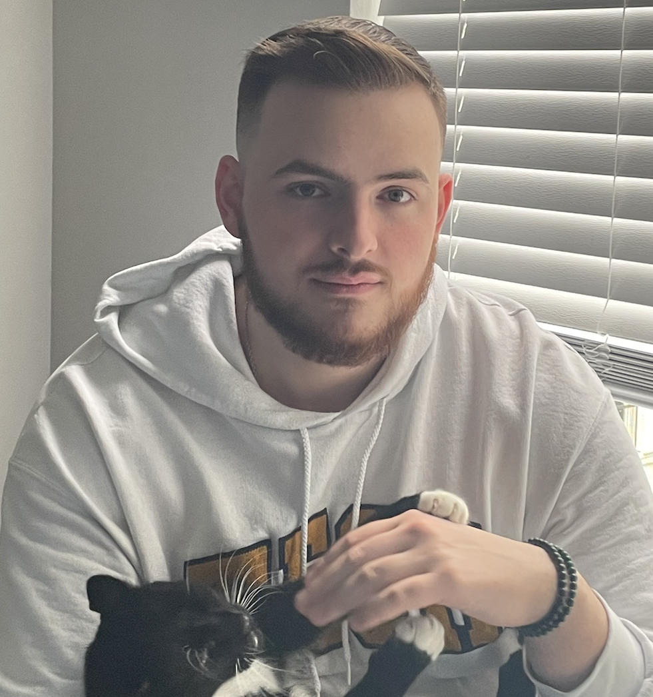

Project One Placeholder
Replace with 100 to 150 word project introduction, probably for Quinn Signer development.
Add screenshots, a demo link, diagrams, or UI mockups here.
LMC 3403 Portfolio
I am a Georgia Tech student focused on computer science, game development, and design. In LMC 3403, I used this semester to strengthen the way I communicate technical work across professional, public, and collaborative contexts. This portfolio brings together my career materials, crisis communication research, community training work for CECHE, and outside projects that connect directly to my long-term interests in interactive media and development.

Self-Assessment Analysis
At the beginning of this course, one of my main goals was to become a stronger technical communicator in a way that would directly support my long-term interests in game development and game design. As someone who wants to work in spaces where technical ideas, creative direction, and collaboration constantly overlap, I wanted to improve at explaining complex work clearly, adapting communication for different audiences, and presenting technical material in a way that is usable rather than just informative. Over the course of the semester, I think my work in LMC 3403 helped me make clear progress toward that goal. Across my major projects, I became more aware of how communication choices shape the way people understand technical material, and I also became more intentional about revision, multimodality, and document design. Looking back at my portfolio as a whole, I believe my work shows growth in all four course outcomes: rhetoric, process, modes and media, and design.
The strongest area of growth for me was rhetoric. This course pushed me to think much more carefully about audience, purpose, and context, especially when discussing technical subjects that can easily become too broad, too dense, or too specialized. In Major Project 1, I had to frame my experience in a way that would make sense to an outside professional audience rather than only to professors or classmates. My resume and cover letter required me to make decisions about what to emphasize, how to describe technical work concisely, and how to connect my experiences to a specific role. Instead of just listing responsibilities, I had to present my work in a way that highlighted relevance, impact, and fit. That was especially important because many of my experiences, such as Unity development, sign language game prototyping, and teaching assistant leadership, involve technical details that could be described in many different ways. This project helped me practice translating technical experience into language that a hiring manager could quickly understand.
I also think Major Project 2 showed growth in rhetoric in a different way because it required me to communicate the same issue to different audiences. In the report on the No Man’s Sky launch crisis, I focused on a more analytical and evidence-based discussion of communication failure, credibility, and audience expectation. In the infographic, that same material had to be compressed into a more public-facing format that was much more visual and much more immediate. That shift helped me understand that good technical communication is not just about being correct. It is also about deciding what an audience actually needs, what level of explanation is useful, and what form will make the message most effective. Since I am interested in game development, this project especially mattered to me because it let me examine communication inside a field I care about while also showing how much public trust depends on clear messaging.
My progress in process is visible in how I approached drafting, revision, and feedback across the semester. Earlier in my academic work, I often treated writing as something that mostly happened once the ideas were already settled. In this class, I became much more aware that communication is iterative and that revision is not just polishing wording. It is often where the real problem-solving happens. In Major Project 1, revising my application materials made me think more critically about organization, clarity, and how much information a reader actually needs in each section. In Major Project 2, drafting and revising helped me narrow my focus and better connect evidence to my central claim about expectation, promotion, and trust in the video game industry. I had to move beyond just explaining what happened and instead make a stronger argument about why the communication surrounding the launch failed.
Major Project 3, which focused on developing training and communication materials for CECHE, also reflects growth in process because it required more sustained collaboration and planning than my earlier projects. Since our work for CECHE centers on training, onboarding, and clearer public-facing communication, the project naturally depends on thinking through usability, sequence, and how a new audience will move through the material step by step. That kind of work mirrors the kinds of communication challenges that come up in game development teams, where documentation, onboarding, and player-facing explanation all need to be clear and well organized. Working on this project in progress has reminded me that effective technical communication is rarely produced in isolation. It develops through discussion, testing, revision, and adjustment based on what actually works for users.
I also developed a lot in modes and media over the semester. One of the course goals is to create WOVEN communication, and this portfolio makes it clear to me that I worked across much more than just traditional written text. My projects included professional documents, analytical writing, visual communication, and collaborative training materials, all of which required different strengths. The infographic for Major Project 2 is one of the clearest examples of this because it forced me to rethink how information is communicated when the reader is scanning rather than reading line by line. In that context, layout, image choice, text density, and pacing all became part of the communication itself. Instead of assuming the writing would do all the work, I had to think about how visual structure would guide understanding.
This matters a lot for my own goals because game development is already a highly multimodal field. Designers and developers constantly communicate through pitch decks, documentation, interface mockups, tutorials, gameplay demonstrations, and presentations. Because of that, I found it useful that this class did not treat technical communication as only formal writing. It pushed me to think more broadly about how written, visual, oral, and digital elements work together. That is something I can directly apply to my future work, whether I am explaining a game mechanic, documenting a tool, presenting a prototype, or helping onboard collaborators onto a project.
Finally, I showed growth in design. Before this course, I mainly thought about design in terms of whether something looked polished. Over the semester, I started thinking more about design as a communication decision tied to clarity, accessibility, and usability. In my resume and cover letter, design choices affected readability and professionalism. In the infographic, design determined how quickly the audience could understand the timeline and the main claim. In Major Project 3, design is especially important because training materials succeed or fail based on whether users can navigate them easily and understand the information in the intended order. This course helped me see that effective design is not decoration. It is part of the argument. It influences emphasis, pacing, and user experience.
Overall, I think this course helped me make meaningful progress toward the goals I had for myself at the start of the semester. I wanted to strengthen my technical communication in a way that would support my interests in game development and game design, and I believe this portfolio shows that I did. Across these projects, I learned how to shape communication for different audiences, revise with greater purpose, work across multiple modes, and make stronger design decisions. More importantly, I now have a clearer understanding of why those skills matter. In game development, strong ideas are not enough on their own. Teams need clear documentation, thoughtful presentations, accessible training materials, and communication that builds trust with players, collaborators, and stakeholders. This course helped me grow in those areas, and I see that growth reflected throughout the work in this portfolio.
Major Project 1
For Major Project 1, I created a revised resume and cover letter meant for professional and technical opportunities. This project made me think more carefully about how to present my experience to someone outside of Georgia Tech who would not already know the context behind my work. I had to decide what experiences mattered most, how to describe them clearly, and how to connect them to the kind of work I want to do in the future. A big part of this project was learning how to frame technical and leadership experience in a way that felt both professional and true to me. Overall, this project shows my ability to communicate my background clearly, adapt to a specific audience, and present myself through concise professional writing.
Major Project 2
For Major Project 2, I worked on a technical crisis report and infographic about the launch of No Man’s Sky and the communication problems tied to it. Since I am really interested in game development, I liked being able to study a situation from the game industry while also thinking about it through a technical communication lens. In the report, I looked at how messaging, expectations, and public trust all became major issues during and after the launch. In the infographic, I had to take those same ideas and present them in a way that was more visual and easier for a broader audience to follow. This project shows my ability to research a complex topic, communicate it to different audiences, and use both written and visual design choices to support my message.
Major Project 3
For Major Project 3, my group created training and communication materials for CECHE with the goal of making the organization’s information clearer and easier for people to use. This project pushed me to think about more than just what information needed to be included. I also had to think about structure, accessibility, and how a new user would actually move through the material. Since this work was collaborative and still developing over time, it also gave me a better sense of how technical communication depends on revision, planning, and feedback. I think this project connects well to my long term interests because it shows how important clear onboarding and user centered design are, especially in fields like game development where people need to understand systems quickly and easily.
Professional Work
Replace with 100 to 150 word project introduction, probably for Quinn Signer development.
Replace with 100 to 150 word project introduction, probably for leading 3 Sign Language Mobile Games.